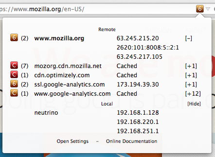
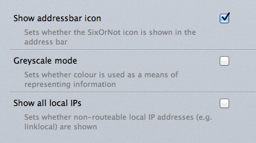

Version 1.0.0
SixOrNot is a Firefox extension which makes it easy for you to identify when the website you're connecting to supports the current generation Internet Protocol (version 6). It also allows you to see a list of all the servers contacted to load a page, along with the IP address your browser connected to to do so. DNS information about each server is also available so that you can see if a site could potentially be loaded via IPv6.
The SixOrNot icon can be displayed via an address bar icon or a button (which may be placed wherever you like in the Firefox UI). The icon indicates whether the main domain of the site you are viewing supports IPv6 and whether your browser used IPv6 to connect to it. SixOrNot looks at each connection Firefox makes and notes whether it was made using IPv4 or IPv6, the information is then displayed via a handy tooltip. SixOrNot also detects the IP address(es) of your local machine for informational display.
Installation is via the usual Firefox method, simply download the .xpi format attachment and accept when prompted to install. SixOrNot is a "restartless" or "bootstrapped" extension - this means you don't need to restart Firefox when it is installed and you should see the button appear in the navigation bar immediately. If you want to enable the address bar icon display open the SixOrNot settings panel (either click on the button and select "Settings" from the panel, or open the addons page and select SixOrNot from the list), check the "Show addressbar icon" option and the address bar icon will display. You can move the button to a different position in the UI (or remove it entirely) using the standard Firefox customization system.
Upgrades are handled automatically by the addon interface.
The SixOrNot interface consists of an icon displayed either in the address bar near the star icon or as a button. By default the address bar icon is disabled and the button is placed onto the navigation bar. You can move the button anywhere you like by entering the Firefox UI customisation mode and dragging it to the desired location. Whether accessed through the button or address bar icon the functionality is identical. Upon clicking the button/icon a tooltip panel is displayed which shows information about the site you are connecting to.
The main icon permits you to see at-a-glance whether the current site supports IPv6 and whether you are connecting to it via IPv6. See below for an explanation of each icon.
The panel has three sections:
For each domain contacted to load the current page a listing appears in this section. The main domain of the site is displayed in bold text. The first IP address listed for each entry is the address the browser used to connect, the remaining addresses are those retrieved from DNS records for the domain.
Subsequent entries in the list are for domains which additional resources have been loaded from, e.g. images from content delivery networks. Again, the first address is the actual connection, the rest are from DNS. You can click on the [+XX] link to expand DNS information for the secondary connections, and then click on the [-] link to hide them again. The number to the left of the domain indicates the total number of connections made to that domain while loading this page.
All IP addresses configured for your machine are displayed here. By default only IP addresses which are globally routeable (including RFC1918 addresses likely to be in use with NAT) are shown. There is a setting to enable display of non-routeable addresses. The display of local addresses can be hidden by clicking the [hide] link to the right of the Local title.
This section contains a link to the SixOrNot settings panel in the about:addons page and a link to this documentation.
Clicking on a domain in the panel will copy that domain and a list of its associated IP addresses to the clipboard (in comma-separated form). Clicking on an IP address in the panel will copy that IP address to the clipboard.
The IP addressing state of each domain is displayed via a set of icons, their meanings are outlined below. Note that there are two sets of icons to choose between (one colourful, the other greyscale). The grey icons can look nicer on Mac OSX, and can be better for those who have difficulty distinguishing between colours.
SixOrNot allows you to configure the following settings. Settings can be accessed via the addon settings panel, accessed either via the "Settings" link in the SixOrNot panel or via the about:addons page.
These options can also be configured via the following boolean values in "about:config":
extensions.sixornot.showaddressicon = false
extensions.sixornot.greyscaleicons = false
extensions.sixornot.showallips = false
Additionally, the following settings in about:config may be useful:
extensions.sixornot.loglevel = 0
This sets the SixOrNot logging output level - default is 0 (only errors), 1, 2 and 3 provide increasingly verbose logging output. Useful if you encounter a bug and need to send the log output to help me diagnose it.
extensions.sixornot.overridelocale
SixOrNot will, by default, try to load a translation for its UI that matches your system (falling back to English if it doesn't have a matching locale). You can override this behaviour and set a locale string manually using this setting. E.g. to set it to use English, specify "en". Note: This setting does not affect translation of the settings panel.
The other extensions.sixornot settings should not generally be changed manually.
Due to the use of OS native DNS resolution and local address detection SixOrNot can behave differently on different operating systems running Firefox. Additionally support for IPv6 varies between OSes and some special steps are needed to enable it in some cases. See below for information on your OS.
SixOrNot is fully compatible with OSX 10.6 to 10.9. IPv6 is enabled by default in these versions of the operating system and no special configuration should be needed for full functionality. I have not tested SixOrNot with earlier versions of OSX so if you encounter problems please do let me know.
SixOrNot is fully compatible with Windows 8, 7 and Windows Vista SP2. These operating systems have IPv6 support enabled by default.
SixOrNot is fully compatible with Windows XP x64 and Windows Server 2003 (x86 and x64). On all these operating systems IPv6 must be manually installed. This can be done by using the command:
netsh interface ipv6 install
The interface will then autoconfigure an IPv6 address, or, if autoconfiguration can't work for some reason manual configuration will be needed. See this Microsoft article for more information on configuring IPv6 in Windows XP x64/Windows Server 2003: How to install and configure IP version 6 in Windows Server 2003 Enterprise Server.
Please note: If the Windows XP x64/Windows Server 2003 IPv6 support has not been installed via the above command then SixOrNot will not be able to detect IPv6 addresses of remote websites. There is currently no way around this limitation.
Windows XP x86 supports IPv6 from SP2, however SixOrNot only supports Windows XP x86 SP3. On Windows XP x86 SP3 IPv6 needs to be manually installed. This can be done by using the command:
netsh interface ipv6 install
The interface will then autoconfigure an IPv6 address, or, if autoconfiguration can't work for some reason manual configuration will be needed. See this Microsoft article for more information on configuring IPv6 in Windows XP x86: IPv6 configuration methods.
Please note: If the Windows XP x86 IPv6 support has not been installed via the above command then SixOrNot will not be able to detect IPv6 addresses of remote websites. There is currently no way around this limitation.
SixOrNot has been tested under Ubuntu Linux (version 14.04). It should work on any distribution however. If you are experiencing problems with SixOrNot on a Linux distribution other than this please get in touch with me and I'll try to fix it for your distribution.
Other OSes should also work - if you encounter any issues please contact me.
IP addresses are fundamental to the operation of the Internet, billions of people use millions of them every day and yet they are invisible in day-to-day use. Usually we don't need to care about IP addresses and in most cases one only becomes aware of them when something is broken. This is due to a system called DNS - the Domain Name System. This masks the technical complexity of addressing behind easy-to-remember domain names. When you visit a website behind the scenes the domain name of that website (everything between the "http://" and the first "/") is looked up via a DNS query to produce an IP address. These addresses are then used to determine how to communicate with the server responsible for serving that website.
There are currently two flavours of IP address around because the Internet is going through a migration period from the old way of addressing things (known as Internet Protocol version 4, or IPv4) to a new addressing system (known as Internet Protocol version 6, or IPv6). The main difference is the number of addresses available, though this is far from the most important difference. IPv4 addresses are represented as 32-bit numbers, the largest number which can be represented in this way is 2^32 (2 to the power of 32) or 4,294,967,296. That sounds like a lot but we are rapidly running out of them (and in practice we can't even use all of those). IPv6 addresses are represented by 128-bit numbers, the largest number which can be represented in this way is 2^128 (2 to the power of 128) or 340,282,366,920,938,463,463,374,607,431,768,211,456 (that's approximately 340 billion billion billion billion, or 3.4x10^38).
So why is there a problem? Adoption of the current IP addressing standard (IPv6) has been slow. Most traffic on the Internet still uses the legacy addressing scheme. At the time of writing less than 1% of all Internet traffic uses IPv6. Given the impending exhaustion of IPv4 addresses (at the time of writing the Asia-Pacific regional registry, APNIC, has already run out) this is a major problem facing the Internet community. The transition from IPv4 to IPv6 isn't an easy one and involves a lot of work, this is typically work which goes unnoticed to the end user. This is as it should be and for the vast majority of people IP addressing will continue to remain an invisible part of their Internet-using experience. The flip side of this invisibility however is that it's easy to overlook the pioneers who are already using IPv6 and raise awareness among those that are not. I am hopeful that by exposing the IP version being used as part of your web browsing this extension will help make it just a little bit more visible.
For more information about IPv6, IPv4 address exhaustion and associated concepts please see the following links.
If you have any further questions about SixOrNot or IPv6 please feel free to email me. My email address details can be found on the Contact section of my website.
A reproduction of the SixOrNot Licence, for your convenience. This document is covered by the same licence.
Copyright © 2008-2014 Timothy Baldock. All Rights Reserved.
Redistribution and use in source and binary forms, with or without modification, are permitted provided that the following conditions are met:
1. Redistributions of source code must retain the above copyright notice, this list of conditions and the following disclaimer.
2. Redistributions in binary form must reproduce the above copyright notice, this list of conditions and the following disclaimer in the documentation and/or other materials provided with the distribution.
3. The name of the author may not be used to endorse or promote products derived from this software without specific prior written permission from the author.
4. Products derived from this software may not be called "SixOrNot" nor may "SixOrNot" appear in their names without specific prior written permission from the author.
THIS SOFTWARE IS PROVIDED BY THE AUTHOR "AS IS" AND ANY EXPRESS OR IMPLIED WARRANTIES, INCLUDING, BUT NOT LIMITED TO, THE IMPLIED WARRANTIES OF MERCHANTABILITY AND FITNESS FOR A PARTICULAR PURPOSE ARE DISCLAIMED. IN NO EVENT SHALL THE AUTHOR BE LIABLE FOR ANY DIRECT, INDIRECT, INCIDENTAL, SPECIAL, EXEMPLARY, OR CONSEQUENTIAL DAMAGES (INCLUDING, BUT NOT LIMITED TO, PROCUREMENT OF SUBSTITUTE GOODS OR SERVICES; LOSS OF USE, DATA, OR PROFITS; OR BUSINESS INTERRUPTION) HOWEVER CAUSED AND ON ANY THEORY OF LIABILITY, WHETHER IN CONTRACT, STRICT LIABILITY, OR TORT (INCLUDING NEGLIGENCE OR OTHERWISE) ARISING IN ANY WAY OUT OF THE USE OF THIS SOFTWARE, EVEN IF ADVISED OF THE POSSIBILITY OF SUCH DAMAGE.